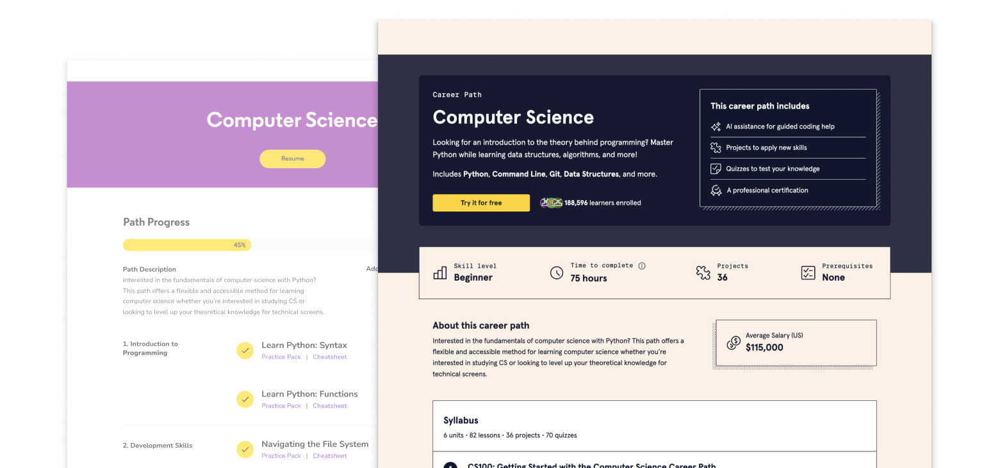
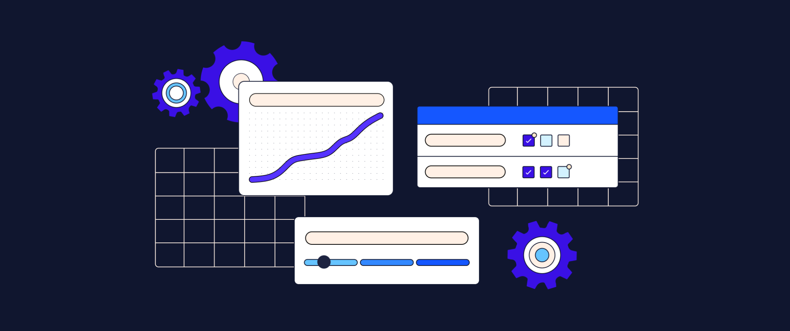
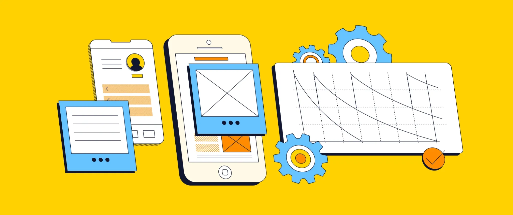

Codecademy is a prominent interactive learning platform aimed at democratizing access to coding education. Codecademy offers structured career paths to help learners build real-world skills through projects. The existing syllabus experience was functional but students had difficulty understanding what their journey would look like before enrolling, and the platform lacked a way to foster community and peer support within smaller groups.
Product Designer
User Research
User Experience
UI Design
Three weeks after implementation, the unenrolled state reduced early drop-off by 22%, as students entered with clearer expectations of the projects ahead.

We refreshed the syllabus interface with the new design system, Gamut. The result was a cleaner, more approachable syllabus that felt like a roadmap rather than a checklist.
A new preview mode allowed prospective students to explore projects and milestones before committing to enrollment. By showing the kinds of real-world work they’d be creating, we helped learners step into their career path with clearer expectations.
We introduced personalized practice modules where students could practice what they've already learned. These sessions surface concepts and skills at the right intervals, helping learners strengthen retention over time instead of cramming.
